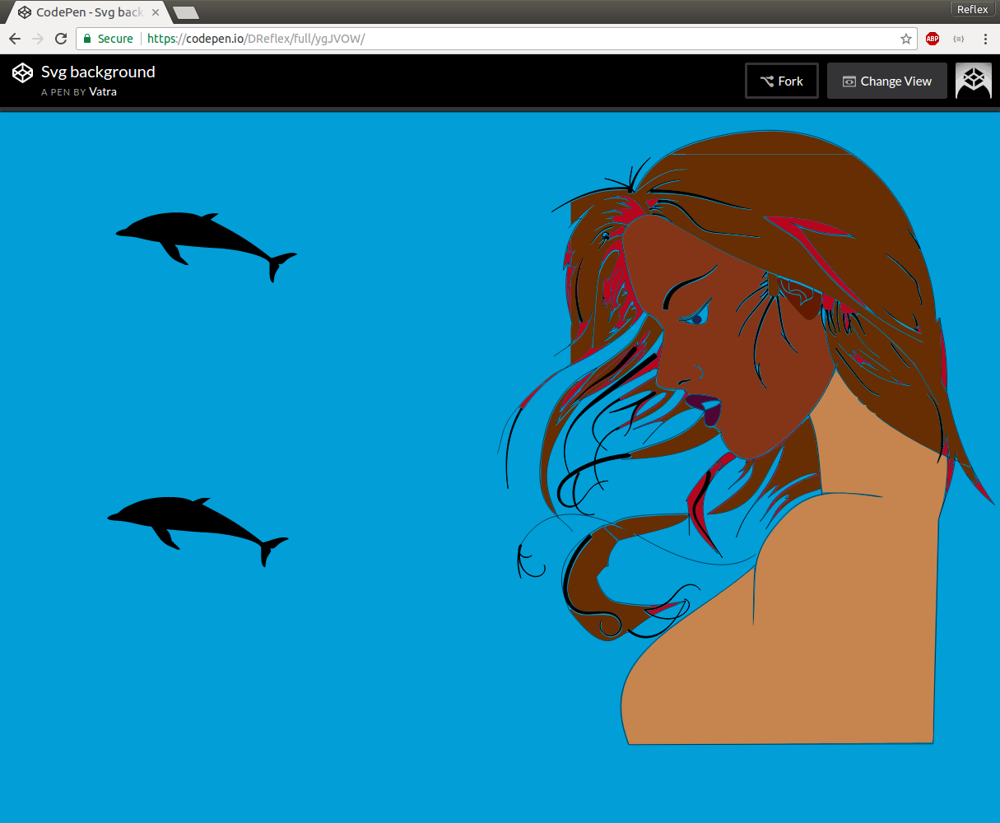
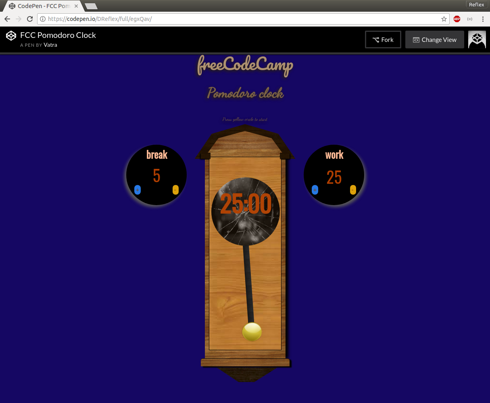
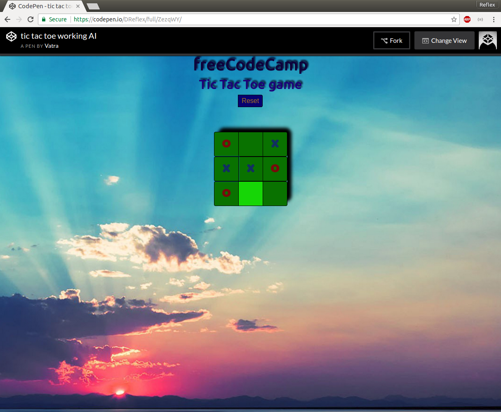
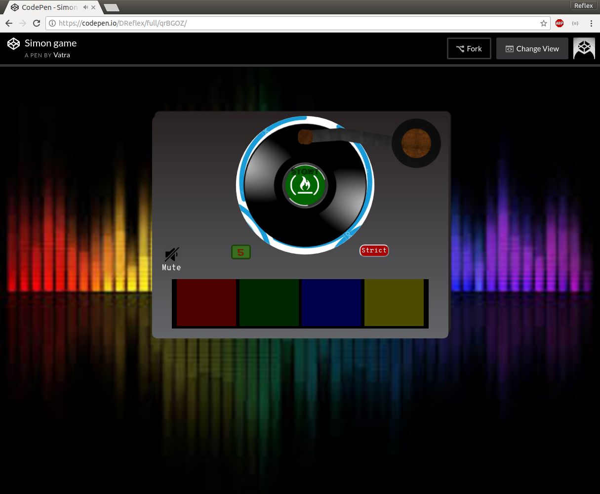

SVG background project captures creativity and readiness to learn new things. Drawing was made in Inkscape, copied to HTML and animated by CSS. As a result picture is colorful and lively.

Pomodoro / Tomato clock is learning technique that teaches how learning process can be split into smaller time segments. This project was made with CSS image technique. In background jQuery is taking care of input and output. Countdown function is made by JavaScript.

Tic-tac-toe is simple turn base game played in 3x3 grid. It uses jQuery to capture moves and show board while in background JS evaluates best move for computer. It's unbeatable because it uses min-max function. This project emphasize test driven approach.

Simon game is final project of freeCodeCamp Front-End certificate. Game randomly generates move, move is then stored and showed to player. If player repeats correct set of moves game continues.
Twitch tv is streaming preview app. It uses ajax call to get data from Twitch.tv JSON API. You can see streamer's picture, weather they online and what are they streaming.

NodeJs API-Search is back-end project. It uses google image search to search images, results are shown in JSON format. Projects connects to MongoDB on mLab to save search query.

FreeCodeCamp Front End Development Certificate. 400+ hours of JavaScript, HTML, CSS.Check Full curriculum. Here is My verification.

Twitch AngularIs my first angular project that uses basic angular functions like routing and server communication. It uses mock data to store twitch channels and it can make get requests to show stream details.
Creative
Always looking for new and interesting ways to solve problems. I'm not afraid of trying new things. I strive for perfection an mastery which includes hard work and constant development.
Skills
I'm constantly learning better design patterns, better user interfaces and cleaner code. I have good understanding of: Html, Css, JavaScript, jQuery, Bootstrap, Linux and Local development .
I'm familiar with: NodeJs, MongoDB, Angular and TypeScript
Ideal
I believe that programing is core skill of the future. With that skill we can create future worth living in. Internet is most important thing in human life. Web is the best way to communicate with clients and share ideas. I wanna be part of changing world.